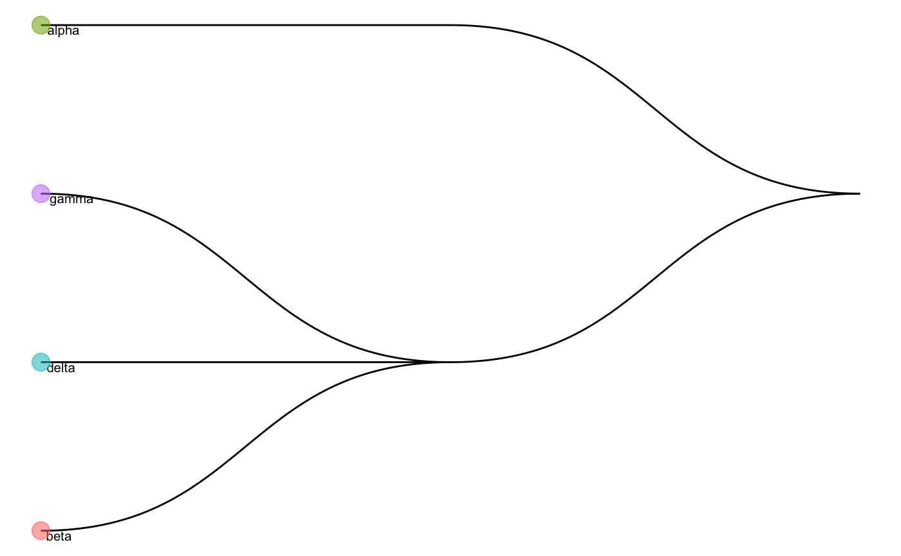

scClassify.RmdA common application of single-cell RNA sequencing (RNA-seq) data is to identify discrete cell types. To take advantage of the large collection of well-annotated scRNA-seq datasets, scClassify package implements a set of methods to perform accurate cell type classification based on ensemble learning and sample size calculation. This vignette demonstrates the usage of scClassify, providing a pithy description of each method with workable examples.
We assume that you have log-transformed (size-factor normalized) matrices where each row is a gene and each column a cell for a reference dataset and a query dataset. For demonstration purposes, we will take a subset of single-cell pancreas datasets from two independent studies (Wang et al., and Xin et al.).
library("scClassify")
data("scClassify_example")
xin_cellTypes <- scClassify_example$xin_cellTypes
exprsMat_xin_subset <- scClassify_example$exprsMat_xin_subset
wang_cellTypes <- scClassify_example$wang_cellTypes
exprsMat_wang_subset <- scClassify_example$exprsMat_wang_subset
exprsMat_xin_subset <- as(exprsMat_xin_subset, "dgCMatrix")
exprsMat_wang_subset <- as(exprsMat_wang_subset, "dgCMatrix")The original cell type annotations and compositions of the example datasets can be easily accessed as shown below.
cat("Cell type composition of Xin et al. data")
#> Cell type composition of Xin et al. data
table(xin_cellTypes)
#> xin_cellTypes
#> alpha beta delta gamma
#> 285 261 49 79
cat("Cell type composition of Wang et al. data")
#> Cell type composition of Wang et al. data
table(wang_cellTypes)
#> wang_cellTypes
#> acinar alpha beta delta ductal gamma stellate
#> 5 206 118 10 96 21 45We can see that Xin et al. data only have 4 cell types, while Wang et al. has 7 cell types.
We first perform non-ensemble scClassify by using Xin et al. as our reference dataset and Wang et al. data as ur query data. We use WKNN as the KNN algorithm, DE (differential expression genes) as the gene selection method, and lastly pearson as the similarity calculation method.
scClassify_res <- scClassify(exprsMat_train = exprsMat_xin_subset,
cellTypes_train = xin_cellTypes,
exprsMat_test = list(wang = exprsMat_wang_subset),
cellTypes_test = list(wang = wang_cellTypes),
tree = "HOPACH",
algorithm = "WKNN",
selectFeatures = c("limma"),
similarity = c("pearson"),
returnList = FALSE,
verbose = FALSE)We can check the cell type tree generated by the reference data:
scClassify_res$trainRes
#> Class: scClassifyTrainModel
#> Model name: training
#> Feature selection methods: limma
#> Number of cells in the training data: 674
#> Number of cell types in the training data: 4
plotCellTypeTree(scClassify_res$trainRes@cellTypeTree)
Noted that scClassify_res$trainRes is a scClassifyTrainModel class.
Check the prediction results.
table(scClassify_res$testRes$wang$pearson_WKNN_limma$predRes, wang_cellTypes)
#> wang_cellTypes
#> acinar alpha beta delta ductal gamma stellate
#> alpha 0 206 0 0 0 2 0
#> beta 0 0 118 0 1 0 0
#> beta_delta_gamma 0 0 0 0 17 0 0
#> delta 0 0 0 10 0 0 0
#> gamma 0 0 0 0 0 19 0
#> unassigned 5 0 0 0 78 0 45We next perform ensemble scClassify by using Xin et al. as our reference dataset and Wang et al. data as our query data. We use WKNN as the KNN algorithm, DE as the gene selection method, and pearson and spearman as the similarity calculation methods. Thus, we will generate two combinations of gene selection models and similarity metrics as training classifiers:
WKNN + DE + pearson
WKNN + DE + spearman
Here, we will weight these two classifiers equally by setting wegihted_ensemble = FALSE. By default this is set as TRUE, so each base classifier will be weighted by the accuracy rates trained in the reference data.
scClassify_res_ensemble <- scClassify(exprsMat_train = exprsMat_xin_subset,
cellTypes_train = xin_cellTypes,
exprsMat_test = list(wang = exprsMat_wang_subset),
cellTypes_test = list(wang = wang_cellTypes),
tree = "HOPACH",
algorithm = "WKNN",
selectFeatures = c("limma"),
similarity = c("pearson", "cosine"),
weighted_ensemble = FALSE,
returnList = FALSE,
verbose = FALSE)We can compare the two base classifiers predictions as below.
table(scClassify_res_ensemble$testRes$wang$pearson_WKNN_limma$predRes,
scClassify_res_ensemble$testRes$wang$cosine_WKNN_limma$predRes)
#>
#> alpha beta beta_delta_gamma delta gamma unassigned
#> alpha 208 0 0 0 0 0
#> beta 0 119 0 0 0 0
#> beta_delta_gamma 0 0 25 0 0 0
#> delta 0 0 0 10 0 0
#> gamma 0 0 0 0 19 0
#> unassigned 1 13 94 7 0 5Now, check the final ensemble results:
table(scClassify_res_ensemble$testRes$wang$ensembleRes$cellTypes,
wang_cellTypes)
#> wang_cellTypes
#> acinar alpha beta delta ductal gamma stellate
#> alpha 0 206 0 0 0 2 0
#> unassigned 5 0 0 0 70 0 45
#> delta 0 0 0 10 0 0 0
#> beta_delta_gamma 0 0 0 0 25 0 0
#> beta 0 0 118 0 1 0 0
#> gamma 0 0 0 0 0 19 0You can also train your own model scClassifyTrainModel using train_scClassify(). Note that by setting weightsCal = TRUE, we will calculate the training error of the reference data as the weights for the individual classifiers.
Here, we illustrate the training function with gene selection methods based on differential expression (“limma”) and biomodal distribution (“BI”).
trainClass <- train_scClassify(exprsMat_train = exprsMat_xin_subset,
cellTypes_train = xin_cellTypes,
selectFeatures = c("limma", "BI"),
returnList = FALSE
)
#> after filtering not expressed genes
#> [1] 980 674
#> [1] "Feature Selection..."
#> [1] "Number of genes selected to construct HOPACH tree 160"
#> [1] "Constructing tree ..."
#> [1] "Training...."
#> [1] "============ selecting features by: limma ============"
#> [1] "============ selecting features by: BI ============"sessionInfo()
#> R version 3.6.1 (2019-07-05)
#> Platform: x86_64-apple-darwin15.6.0 (64-bit)
#> Running under: macOS Catalina 10.15.3
#>
#> Matrix products: default
#> BLAS: /Library/Frameworks/R.framework/Versions/3.6/Resources/lib/libRblas.0.dylib
#> LAPACK: /Library/Frameworks/R.framework/Versions/3.6/Resources/lib/libRlapack.dylib
#>
#> locale:
#> [1] en_AU.UTF-8/en_AU.UTF-8/en_AU.UTF-8/C/en_AU.UTF-8/en_AU.UTF-8
#>
#> attached base packages:
#> [1] stats graphics grDevices utils datasets methods base
#>
#> other attached packages:
#> [1] scClassify_0.2.1
#>
#> loaded via a namespace (and not attached):
#> [1] Biobase_2.46.0 viridis_0.5.1 mixtools_1.1.0
#> [4] tidyr_1.0.0 tidygraph_1.1.2 viridisLite_0.3.0
#> [7] splines_3.6.1 ggraph_2.0.0 RcppParallel_4.4.4
#> [10] assertthat_0.2.1 statmod_1.4.32 stats4_3.6.1
#> [13] yaml_2.2.0 ggrepel_0.8.1 pillar_1.4.2
#> [16] backports_1.1.5 lattice_0.20-38 glue_1.3.1
#> [19] limma_3.42.0 digest_0.6.23 polyclip_1.10-0
#> [22] colorspace_1.4-1 htmltools_0.4.0 Matrix_1.2-18
#> [25] pkgconfig_2.0.3 purrr_0.3.3 scales_1.1.0
#> [28] tweenr_1.0.1 hopach_2.46.0 ggforce_0.3.1
#> [31] tibble_2.1.3 proxy_0.4-23 mgcv_1.8-28
#> [34] farver_2.0.1 ggplot2_3.2.1 BiocGenerics_0.32.0
#> [37] lazyeval_0.2.2 survival_3.1-8 magrittr_1.5
#> [40] crayon_1.3.4 memoise_1.1.0 evaluate_0.14
#> [43] fs_1.3.1 nlme_3.1-141 MASS_7.3-51.4
#> [46] segmented_1.0-0 tools_3.6.1 minpack.lm_1.2-1
#> [49] lifecycle_0.1.0 stringr_1.4.0 S4Vectors_0.23.25
#> [52] munsell_0.5.0 cluster_2.1.0 compiler_3.6.1
#> [55] pkgdown_1.4.1 proxyC_0.1.5 pbmcapply_1.5.0
#> [58] rlang_0.4.2 grid_3.6.1 rstudioapi_0.10
#> [61] igraph_1.2.4.2 labeling_0.3 rmarkdown_1.18
#> [64] gtable_0.3.0 graphlayouts_0.5.0 R6_2.4.1
#> [67] gridExtra_2.3 knitr_1.26 dplyr_0.8.3
#> [70] zeallot_0.1.0 rprojroot_1.3-2 desc_1.2.0
#> [73] stringi_1.4.3 parallel_3.6.1 Rcpp_1.0.3
#> [76] vctrs_0.2.0 diptest_0.75-7 tidyselect_0.2.5
#> [79] xfun_0.11